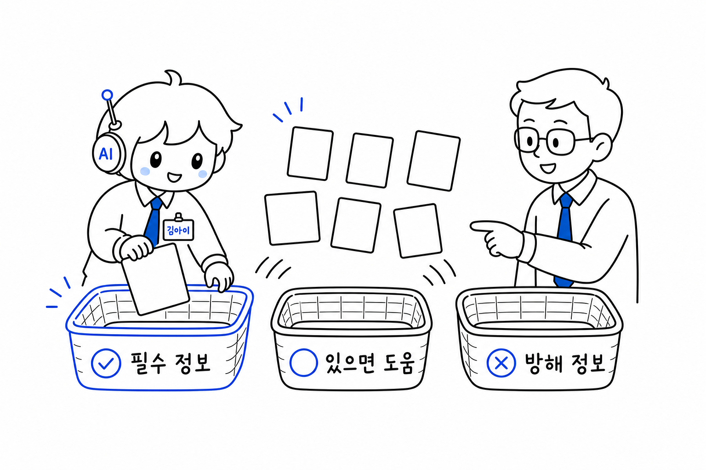
act1-info-baskets
정보 선별은 모든 자료를 넣는 일이 아니라 필수 정보, 있으면 도움, 방해 정보를 구분하는 일임을 설명한다.
필수 정보있으면 도움방해 정보많이 주기가 아니라 고르기

정보 선별은 모든 자료를 넣는 일이 아니라 필수 정보, 있으면 도움, 방해 정보를 구분하는 일임을 설명한다.
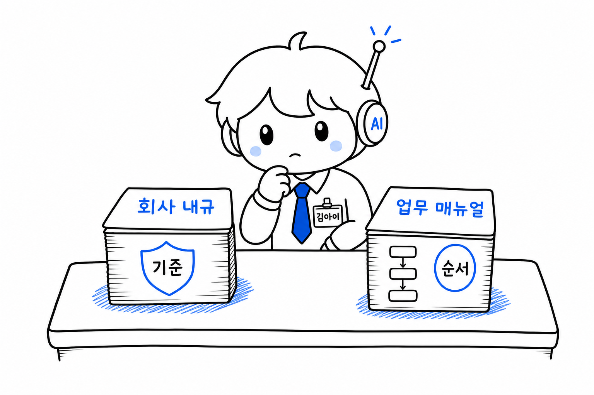
회사 내규 문서와 업무 매뉴얼이 각각 기준과 순서로 분리되어 놓인 손그림
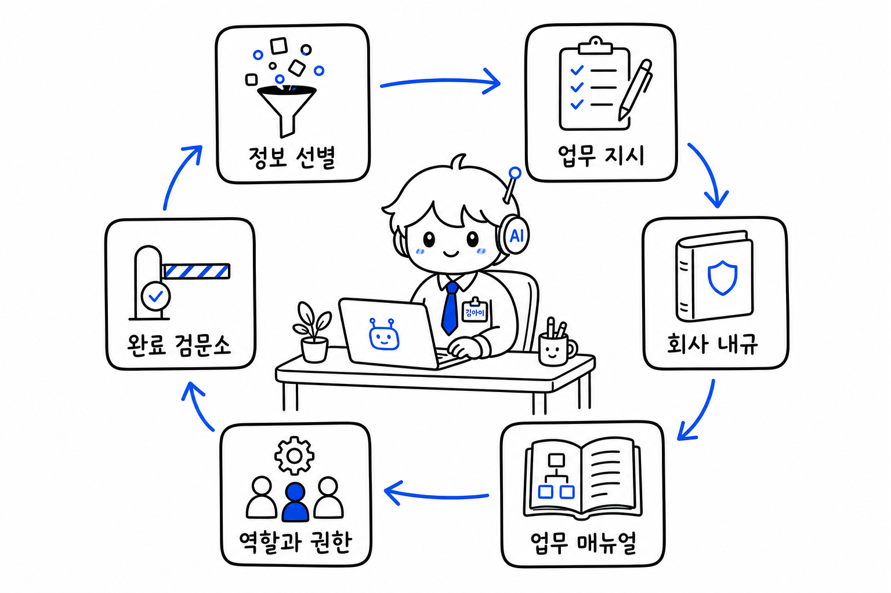
Act 1~6 장치가 김아이 팀 업무 환경으로 연결됨을 정리한다.
컨텍스트 정리는 책상에 올릴 자료, 옆에 둘 자료, 치울 자료를 정하는 일임을 설명한다.
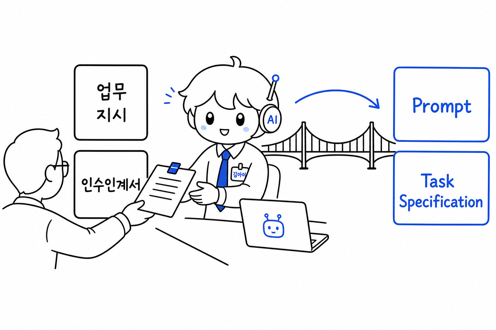
AI에게 주는 업무 지시와 인수인계서가 Prompt와 Task Specification이라는 실제 용어로 연결된다는 점을 설명한다.
인수인계서가 김아이가 혼자 일할 수 있게 목표, 자료, 조건, 완료 기준을 묶어 준다는 점을 설명한다.
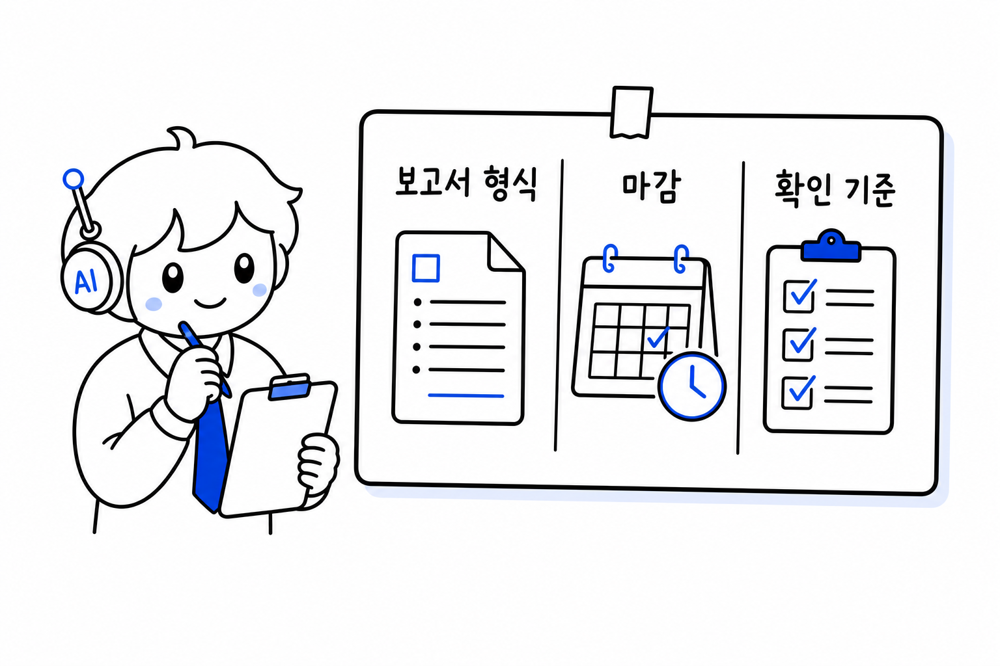
좋은 지시서가 출력 형식과 완료 기준을 정한다는 점을 설명한다.
김아이 앞에 업무 지시, 책상 위 작업 자료, 공용공간 회사 내규가 세 영역으로 분리된 손그림
김아이 책상 위에 작업 지시, 참고 자료, 체크리스트만 정돈되어 있는 손그림
CLAUDE.md 로드 순서는 넓은 범위에서 좁은 범위로 흐르고 적용 강도는 가까운 작업 위치에서 더 강한 손그림

너무 많은 회사 내규 앞에서 김아이가 읽지 못하고, 설정 충돌과 실행 지연을 겪는 손그림
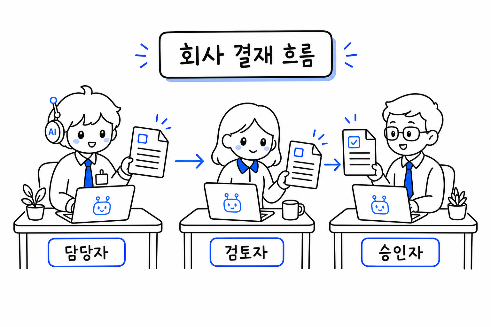
회사에서는 담당자, 검토자, 승인자가 나뉜다는 비유를 설명한다.

최아이가 작성 역할로 정해진 지시와 자료 안에서 결과물을 만듦을 설명한다.
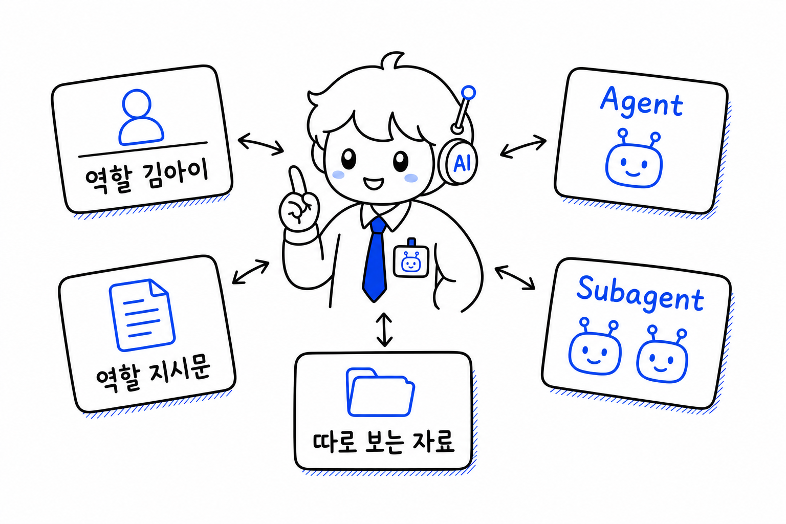
역할 신입사원 비유를 Agent/Subagent 용어로 연결한다.

각 신입사원이 자기 자리의 매뉴얼(Skill)만 보는 구조를 설명한다.

MCP를 협력사에 요청을 보내는 공식 창구로 설명한다.
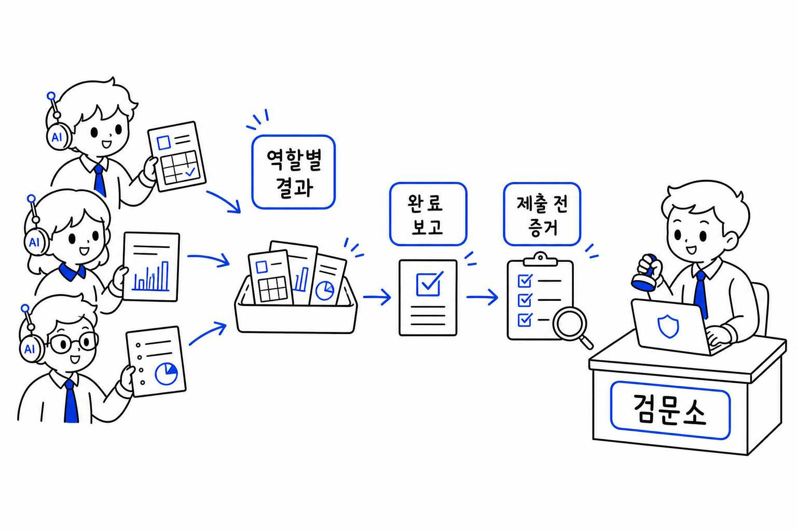
에이전트 팀 완료 후에도 제출 전 확인이 필요하다는 Act 6 브릿지를 설명한다.
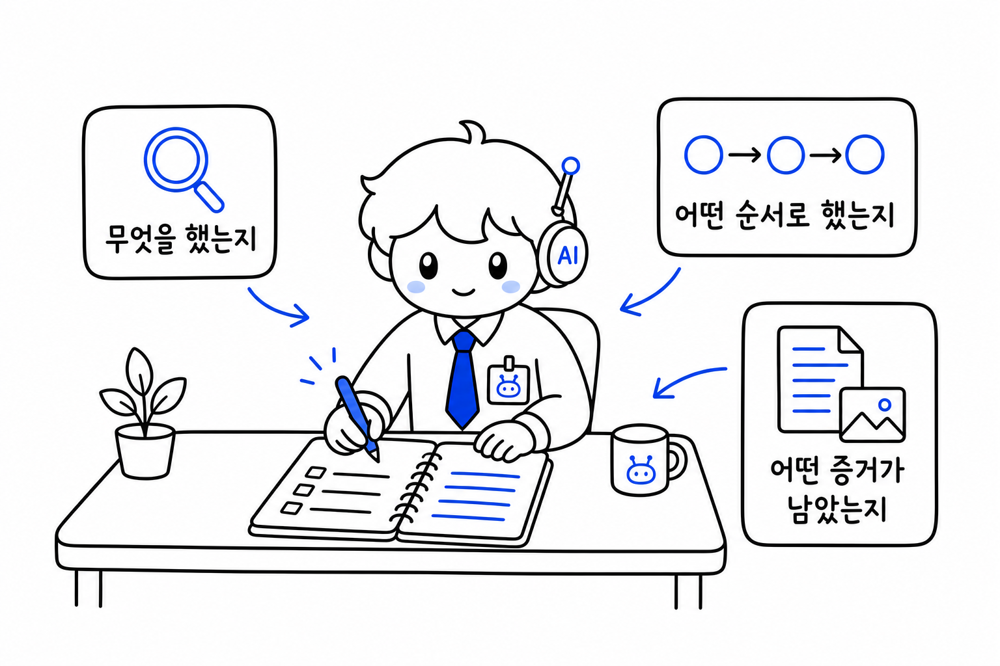
검증을 위해 김아이가 작업 기록을 남겨야 함을 설명한다.
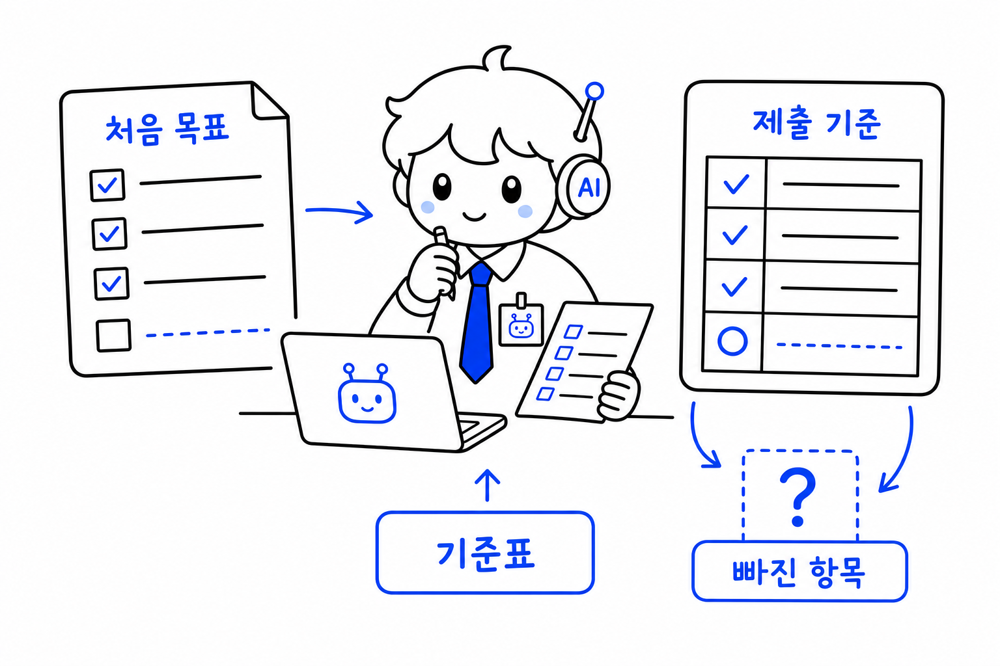
처음 목표와 제출 기준에 맞는지 대조하는 Evaluation Criteria를 설명한다.

남은 위험과 다음 조치를 인수인계 기록으로 남겨야 함을 설명한다.
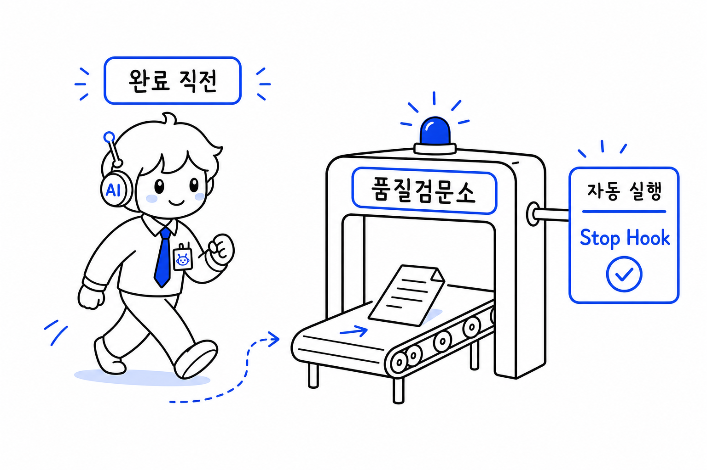
완료 직전에 품질검문소를 켜는 Stop Hook을 설명한다.

Evaluation이 통과와 보류를 가르는 기준임을 설명한다.

검문소에 처리 상태를 적는 상태표가 필요함을 설명한다.